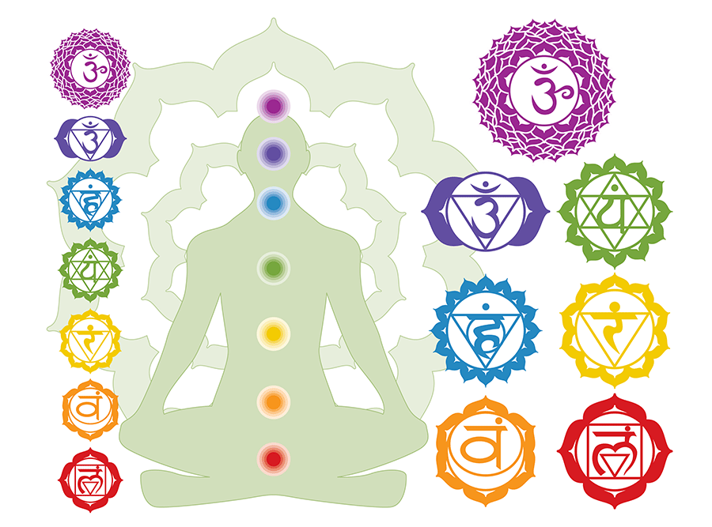

Yoga means Union with Atma and Prana Vidya is the knowledge and science
of using Prana (life energy force) for daily life activities. YPV equips
people with wellness practices using myriads of holistic techniques that
accelerates the self-healing capability of the body and upgrade a person
at all levels – Physical, Etheric, Emotional, Mental, Intuitional, and
spiritual. These practices are built on foundation that integrates
ancient knowledge of yoga, prana, purification, and meditation with the
modern approach of learning to uplift overall well-being of every
individual.
Suryanamaskara
Surya Namaskar is the Sanskrit name for a specific sequence of twelve yoga
asana, otherwise known as a Sun Salutation. It is one of the most widely
known yoga practices, incorporated into several different traditions such
as Hatha, Vinyasa and Ashtanga. The term is derived from two Sanskrit
roots; surya, meaning "sun" and namaskar meaning "greetings" or
‘salutations’".
Traditionally, the practice of Surya Namaskar was used as a means of
paying respect to the sun. In Indian culture from which the practice came,
the sun is regarded as the source of all life, and it is therefore of
great importance. In Hinduism, Surya is the God of the sun, understood to
be the creator of the universe, and in Vedic tradition the sun is symbolic
of consciousness and the Divine. As such, Surya Namaskar is considered to
be one of the most important yoga practices. Surya Namaskar is also
referred to as Sun Salutation in English.
Pranayamam
Pranayama, pronounced "praa-nuh-yaa-muh," is an ancient yogic practice
focused on controlling and regulating the breath. This involves various
breathing patterns and exercises designed to increase prana, the vital
life force energy that flows through us.